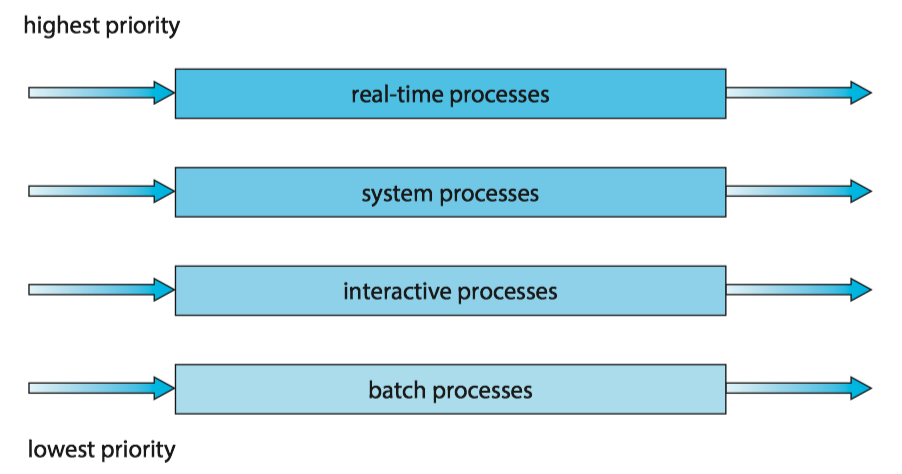
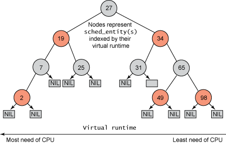

Operating System Concepts 5 - CPU Scheduling
- 1 Basic Concepts
- 2 Scheduling Criteria
- 3 Scheduling Algorithms
- 4 Thread Scheduling
- 5 Multi-Processor Scheduling
- 6 Real-Time CPU Scheduling
- 7 Linux Scheduling
On modern operating systems it is kernel-level threads —not processes—that are in fact being scheduled by the operating system.
- User-level threads are managed by a thread library, and the kernel is unaware of them.
- To run on a CPU, user-level threads must ultimately be mapped to an associated kernel-level thread, although this mapping may be indirect and may use a lightweight process (LWP).
1 Basic Concepts
1.1 CPU-I/O Burst Cycle
Process execution consists of a cycle of CPU execution and I/O wait. 进程执行由CPU执行周期和I/O等待周期组成。
- Processes alternate between these two states. 进程在这两个状态之间切换。
- Process execution begins with a CPU burst, which is followed by an I/O burst and so on. 进程执行从CPU区间开始，在这之后是I/O区间。
进程在CPU区间和I/O区间之间切换：

The durations of CPU bursts tend to have a frequency curve similar to the figure below.
- The curve is generally characterized as exponential or hyperexpoential(超指数).
- A large number of short CPU bursts and a small number of long CPU burst.
- An I/O-bounded program typically has many short CPU bursts. I/O密集程序通常具有很多短CPU区间。
- A CPU-bound program might have a few long CPU bursts.CPU密集程序可能有少量的长CPU区间。
- The distribution can be important when implementing a CPU-scheduling algorithm. 分布有助于选择合适的CPU调度算法。

1.2 CPU Scheduler
Whenever the CPU becomes idle, the operating system must select one of the processes in the ready queue(就绪队列) to be executed. 每当CPU空闲时，操作系统就必须从就绪队列中选择一个进程来执行。
- The selection process is carried out by the CPU scheduler(CPU调度程序). 进程选择由CPU调度程序执行。
- CPU scheduler selects a process from the processes in memory that are ready to execute and allocates the CPU to that process. 调度程序从内存中选择一个能够执行的进程，并为之分配CPU。
- A ready queue can be implemented as a FIFO queue, a priority queue, a tree, or simply an unordered linked list. 就绪队列可以是FIFO队列，优先队列、树或无序链表。
1.3 Preemptive and Nonpreemptive Scheduling
CPU-scheduling decisions may take place under the following four circumstances:
- When a process switches from the running state to the waiting state (for example, as the result of an I/O request or an invocation of
wait()for the termination of a child process) 当一个进程从运行状态切换到等待状态（如：I/O请求，或者调用wait等待一个子进程的终止） - When a process switches from the running state to the ready state (for example, when an interrupt occurs) 当一个进程从运行状态切换到就绪状态（如：出现中断）
- When a process switches from the waiting state to the ready state (for example, at completion of I/O) 当一个进程从等待状态切换到就绪状态（如：I/O完成）
- When a process terminates 当一个进程终止时
When scheduling takes place only under circumstances 1 and 4, the scheduling scheme is nonpreemptive(非抢占的) or cooperative(协作的). Otherwise, it is preemptive(抢占的).
- Under nonpreemptive scheduling, once the CPU has been allocated to a process, the process keeps the CPU until it releases it either by terminating or by switching to the waiting state.
- Virtually all modern Operating systems use preemptive scheduling algorithms.
1.4 Dispatcher
The dispatcher(分派程序) is the module that gives control of the CPU's core to the process selected by the CPU scheduler. This function involves the following:
- Switching context from one process to another
- Switching to user mode
- Jumping to the proper location in the user program to resume that program
Dispatch latency (分派延迟) is the time it takes for the dispatcher to stop one process and start another running.

2 Scheduling Criteria
Scheduling criteria（调度准则) include the following:
- CPU utilization (CPU利用率)
- Throughput (吞吐量)： the number of processes that are completed per time unit.
- Turnaround time (周转时间): the interval from the time of submission of a process to the time of completion.
- Waiting time (等待时间): the sum of time spent waiting in the ready queue.
- Response time (响应时间): the time from the submission of a request until the first response is produced.
3 Scheduling Algorithms
3.1 First-Come,First-Served scheduling, FCFS
By far the simplest CPU-scheduling algorithm is the first-come first serve scheduling (先到先服务调度, FCFS) algorithm.
- The implementation of FCFS policy is easily managed with a FIFO queue.
- The average waiting time under the FCFS policy is often quite long.
- Convoy effect(护航效果) occurs when all the other processes wait for the one big process to get off the CPU. 所有其他进程都等待一个大进程释放CPU，这称之为护航效果。
- The FCFS scheduling algorithm is nonpreemptive. FCFS调度算法是非抢占的。
3.2 Shortest-job-first scheduling, SJF
The shortest-job-first scheduling (最短作业优先调度, SJF) algorithm associates with each process the length of the process's next CPU burst.
- When the CPU is available, it is assigned to the process that has the smallest next CPU burst.
- It gives the minimum average waiting time for a given set of processes.
- The SJF algorithm can be either preemptive or nonpreemptive.
- Preempt the currently executing process: when a new process arrives at the ready queue while a previous process is still executing. The next CPU burst of the newly arrived process may be shorter than what is left of the currently executing process.
The next CPU burst is generally predicted as an exponential average of the measured lengths of previous CPU bursts. Let \(t_n\) be the length of the \(n\)th CPU burst, and let \(\tau_{n+1}\) be predicted value for the next CPU burst:
\[\tau_{n+1}= \alpha \tau_n + (1-\alpha) \tau_n\]
where \(0\le\alpha \le 1\), commonly \(\alpha = 1/2\).
3.3 Round-Robin scheduling, RR
The round-robin scheduling(轮转调度) algorithm is similar to FCFS scheduling, but switch occurs after 1 time quantum (时间片).
- Time quantum is a small unit of time, generally from 10 to 100 milliseconds in length.
- The ready queue is treated as a circular queue.
- If the process have a CPU burst of less than 1 time quantum, the process itself will release the CPU voluntarily.
- otherwise, a context switch will be executed, and the process will be put at the tail of the ready queue.
The performance of the RR algorithm depends heavily on the size of the time quantum.
- If extremely large, the RR policy is the same as the FCFS policy.
- If extremely small, it'll result in a large number of context switches.
3.4 Priority scheduling algorithm
The priority-scheduling(优先级调度) algorithm associate each process a priority, and the CPU allocated to the process with the highest priority.
- FCFS: equal-priority
- SJF: the priority is the inverse of the next CPU burst.
ISSUE: Indefinite blocking(无限阻塞), or starvation(饥饿) occurs when some low-priority processes waiting indefinitely.
SOLUTION: Aging(老化) involves gradually increasing the priority of processes that wait in the system for a long time.
3.5 Multilevel Queue Scheduling
For multilevel queue scheduling(多级队列调度), there are separate queues for each distinct priority, and priority scheduling simply schedules the process in the highest-priority queue.
A multilevel queue scheduling algorithm can be used to partition processes into several separate queuse based on the process type.

In addition, there must be scheduling among the queues :
- Fixed-priority preemptive scheduling(固定优先级抢占调度): Each queue has absolute priority over lower-priority queues
- eg. no process in the batch queue, could run unless the queues for real-time processes, system processes, and interactive processes were all empty.
- Time-slice among queues(队列之间划分时间片): each queue gets a certain portion of the CPU time.
- eg. the foreground queue can be given 80 percent of the CPU time for RR scheduling among its processes, while the background queue receives 20 percent of the CPU to give to its processes on an FCFS basis.
3.6 Multilevel Feedback-Queue Scheduling
The multilevel feedback queue scheduling(多级反馈队列调度) algorithm allows a process to move between queues.
- If a process uses too much CPU time, it will be moved to a lower-priority queue.
- It leaves I/O-bound and interactive processes—which are typically characterized by short CPU bursts —in the higher-priority queues.
- A process that waits too long in a lower-priority queue may be moved to a higher-priority queue.
- This form of aging prevent starvation.
In general, a multilevel feedback queue scheduler is defined by the following parameters:
- The number of queues
- The scheduling algorithm for each queue
- The method used to determine when to upgrade a process to a higher priority queue
- The method used to determine when to demote a process to a lower priority queue
- The method used to determine which queue a process will enter when that process needs service
4 Thread Scheduling
4.1 Contention Scope
Process contention scope (PCS，进程竞争范围), occurs when competition for the CPU takes place among threads belonging to the same process.
- the thread library schedules user-level threads to run on an available LWP, on systems implementing the many-to-one and many-to-many models.
To decide which kernel-level thread to schedule onto a CPU, the kernel uses system-contention scope (SCS, 系统竞争范围).
- Systems using the one-to-one model, such as Windows and Linux schedule threads using only SCS.
4.2 Pthread Scheduling
Pthreads identifies the following contention scope values:
PTHREAD_SCOPE_PROCESSschedules threads using PCS scheduling.PTHREAD_SCOPE_SYSTEMschedules threads using SCS scheduling.
The Pthread IPC (Interprocess Communication) provides two functions for setting—and getting—the contention scope policy:
pthread_attr_setscope(pthread_attr_t *attr, int scope)pthread_attr_getscope(pthread_attr_t *attr, int *scope)
#include <pthread.h>
#include <stdio.h>
#define NUM_THREADS 5
/* the thread runs in this function */
void *runner(void *param);
int main(int argc, char *argv[])
{
int i, scope;
pthread_t tid[NUM_THREADS]; /* the thread identifier */
pthread_attr_t attr; /* set of attributes for the thread */
/* get the default attributes */
pthread_attr_init(&attr);
/* first inquire on the current scope */
if (pthread_attr_getscope(&attr,&scope) != 0)
fprintf(stderr, "Unable to get scheduling scope.\n");
else {
if (scope == PTHREAD_SCOPE_PROCESS)
printf("PTHREAD_SCOPE_PROCESS\n");
else if (scope == PTHREAD_SCOPE_SYSTEM)
printf("PTHREAD_SCOPE_SYSTEM\n");
else
fprintf(stderr,"Illegal scope value.\n");
}
/* set the scheduling algorithm to PCS or SCS */
if (pthread_attr_setscope(&attr, PTHREAD_SCOPE_SYSTEM) != 0)
printf("unable to set scheduling policy.\n");
/* create the threads */
for (i = 0; i < NUM_THREADS; i++)
pthread_create(&tid[i],&attr,runner,NULL);
/**
* Now join on each thread
*/
for (i = 0; i < NUM_THREADS; i++)
pthread_join(tid[i], NULL);
}
/**
* The thread will begin control in this function.
*/
void *runner(void *param)
{
/* do some work ... */
pthread_exit(0);
}
5 Multi-Processor Scheduling
5.1 Approaches to Multiple-Processor Scheduling
Asymmetric multiprocessing (AMP，非对称多处理)
- all scheduling decisions, I/O processing, and other system activities handled by a single processor -- the master server; the other processors execute only user code. 让一个处理器（主服务器）处理所有的调度决定、I/O处理以及其他系统活动，其他的处理器只执行用户代码。
- it is simple because only one core accesses the system data structures, reducing the need for data sharing. 简单，因为只有一个处理器访问系统数据结构，减轻了数据共享的需要。
- the master server becomes a potential bottleneck where overall system performance may be reduced.
Symmetric multiprocessing (SMP， 对称多处理)
- each processor is self-scheduling
- it provides two possible strategies for organizing the threads eligible to be scheduled:
- All threads may be in a _common ready queue_.
- use some form of locking to protect the common ready queue from race condition
- all accesses to the queue would require lock ownership, it would be a performance bottleneck.
- Each processor may have its own private queue of threads.
- most common approach on systems supporting SMP
- more efficient use of cache memory.
- All threads may be in a _common ready queue_.

5.2 Multicore Processors
Issue : memory stalls occurs when a processor accesses memory, it spends a significant amount of time waiting for the data to become available.
- occurs primarily because modern processors operate at much faster speeds than memory
- occur because of a cache miss

Solution : many recent hardware designs have implemented multithreaded processing cores in which two (or more) hardware threads(硬件线程) are assigned to each core.
- If one hardware thread stalls while waiting for memory, the core can switch to another thread.
- From an operating system perspective, each hardware thread maintains its architectural state, such as instruction pointer and register set, and thus appears as a logical CPU that is available to run a software thread. This technique is known as chip multithreading (CMT, 芯片多线程). Intel use the term hyper-threading(超线程).
- NOTE: the resources of the physical core (such as caches and pipelines) are shared among its hardware threads, and a processing core can only execute one hardware thread at a time.

Two levels of scheduling needed:
- It chooses which software thread to run on each hardware thread.
- It may choose any scheduling algorithm.
- It chooses which hardware thread to run on CPU.
- Use a simple round-robin algorithm
- assigned to each hardware thread a dynamic urgency value ranging from 0 to 7, with 0 representing the lowest urgency and 7 the highest.

5.3 Load Balancing
Load balancing(负载均衡) attempts to keep the workload evenly distributed across all processors in an SMP system.
Two general approaches to load balancing:
- Push migration: a specific task periodically checks the load on each processor and -- if it finds an imbalance -- evenly distributes the load by moving (or pushing) threads from overloaded to idle or less-busy processors.
- Pull migration: an idle processor pulls a waiting task from a busy processor.
- They are not mutually exclusive and are, in fact, often implemented in parallel on load-balancing systems.
5.4 Processor Affinity
Because of the high cost of invalidating and repopulating caches, most operating systems with SMP support try to avoid migrating a thread from one processor to another and instead attempt to keep a thread running on the same processor and take advantage of a warm cache. This is known as processor affinity(处理器亲和性)。
Common ready queue and per-processor ready queue(section 5.1):
- If we adopt the approach of a common ready queue, a thread may be selected for execution by any processor. Thus, if a thread is scheduled on a new processor, that processor’s cache must be repopulated.
- With private, per-processor ready queues, a thread is always scheduled on the same processor and can therefore benefit from the contents of a warm cache.
The main-memory architecture of a system can affect processor affinity issues as well. Non-uniform memory access(NUMA, 非一致性内存访问) where there are two physical processor chips each with their own CPU and local memory. A CPU has faster access to its local memory than to memory local to another CPU.

Interestingly, load balancing often counteracts the benefits of processor affinity.
6 Real-Time CPU Scheduling
[to be continued]
7 Linux Scheduling
The Completely Fair Scheduler（CFS，完全公平调度算法) is the default Linux scheduling algorithm.
- Each task has a virtual runtime value, which is its actual runtime normalized to the number of ready tasks.
- Task priority is incorporated as a decay factor into this
formula.- Lower-priority tasks have higher rates of decay than higher-priority tasks.
- The CPU is allocated to the task with the smallest virtual
runtime value.
Standard Linux kernels implement two scheduling classes(调度类):
- a default scheduling class using the CFS scheduling algorithm
- a real-time scheduling class.
Each runnable task is placed in a red-black tree - a balanced binary search tree whose key is based on the value of virtual runtime vruntime.
- discover the leftmost node will require \(O(\log N)\) operations.
- Linux scheduler caches the leftmost node in the variable
rb_leftmost, and requires only retrieving the cached value.

Operating System Concepts 6 - Synchronization Tools
- 1 Background
- 2 The Critical-Section problem
- 3 Peterson's Solution
- 4 Hardware support for Synchronization
- 5 Mutex locks
- 6 Semaphores
- 7 Monitors
- 8 Liveness
- 9 Evaluation
1 Background
A race condition(竞争条件) occurs when several processes access and manipulate the same data concurrently and the outcome of the execution depends on the particular order in which the access takes place.
多个进程并发访问和操作同一数据，且执行结果与访问发生的特定顺序有关，称之为竞争条件。
2 The Critical-Section problem
A critical section（临界区） is a section of code, in which the process may be accessing and updating data that is shared with at least one other process.
- When one process is executing in its critical section, no other process is allowed to execute in its critical section.
The critical-section problem（临界区问题） is to design a protocol that the processes can use to synchronize their activity so as to cooperatively share data.
- Each process must request permission to enter its critical section.
- The section of code implementing this request is the entry section（进入区）
- The critical section may be followed by an exit section (退出区)。
- The remaining code is the **remainder section **（剩余区)。

A solution to the critical-section problem must satisfy the following three requirements:
- Mutual exclusion (互斥): If process \(P_i\) is executing in its critical section, then no other processes can be executing in their critical sections. 如果进程\(P_i\)在其临界区内执行，那么其他进程都不能在其临界区内执行；
Progress (前进): If no process is executing in its critical section and some processes wish to enter their critical sections, then only those processes that are not executing in their remainder sections can participate in deciding which will enter its critical section next, and this selection cannot be postponed indefinitely. 如果没有进程在其临界区内执行且有进程需进入临界区，那么只有那么不在剩余区内执行的进程可参加选择，以确定谁能下一个进入临界区，且这种选择不能无限推迟；
Bounded waiting (有限等待): There exists a bound, or limit, on the number of times that other processes are allowed to enter their critical sections after a process has made a request to enter its critical section and before that request is granted. 从一个进程做出进入临界区的请求，直到该请求允许为止，其他进程允许进入其临界区内的次数有上限。
Two general approaches are used to handle critical sections in operating systems: preemptive kernels（抢占内核） and nonpreemptive kernels（非抢占内核）.
- A preemptive kernel allows a process to be preempted while it is running in kernel mode. 抢占内核允许处于内核模式的进程被抢占。
- A nonpreemptive kernel does not allow a process running in kernel mode to be preempted.A kernel-model process will run until it exists kernel mode, blocks, or voluntarily yields control of the CPU.非抢占内核不允许内核模式的进程被抢占。
- A nonpreemptive kernel is essentially free from race conditions on kernel data structures, as only on process is active in the kernel at at time. 非抢占内核的内核从根本上不会导致竞争条件，因为在内核中一次只有一个进程是活跃的。
- Preemptive kernels must be carefully designed to ensure that shared kernel data are free from race conditions. 对于抢占内核需要认真设计以确保共享内和数据免于竞争条件。
- A preemptive kernel may be more responsive, since there is less risk that a kernel-model process will run for an arbitrarily long period before relinquishing the processor to waiting process. 抢占内核的响应更快，因为处于内核模式的进程在释放CPU之前不会运行过久。
- A preemptive kernel is more suitable for real-time programming, as it will allow a real-time process to preemptive a process currently running in the kernel. 抢占内核更适合实时编程，因为它能允许实时进程抢占处于内核模式运行的其他进程。
3 Peterson's Solution
Peterson’s solution(Peterson 算法) is restricted to two processes that alternate execution between their critical sections and remainder sections. The processes are numbered \(P_0\) and \(P_1\). For convenience, when presenting \(P_i\), we use \(P_j\) to denote the other process; that is \(j\) equals \(1-i\).
Peterson's solution requires the two processes to share two data items:
int turn;
boolean flag[2];
The structure of process \(P_i\) in Peterson's solution.
while (true) {
flag[i] = true;
turn = j;
while (flag[j] && turn == j)
;
/* critical section */
flag[i] = false;
/*remainder section */
}
- The variable
turnindicates whose turn it is to enter its critical section. - The
flagarray is used to indicate if a process is ready to enter its critical section.
Note: Peterson’s solution is not guaranteed to work on modern computer architectures for the primary reason that, to improve system performance, processors and/or compilers may reorder read and write operations that have no dependencies.
If the assignments of the first two statements that appear in the entry section of Peterson's solution are reordered. It is possible that both threads may be active in their critical sections at the same time.

4 Hardware support for Synchronization
Hardware support for the critical-section problem includes,
- memory barriers
- hardware instructions
- atomic variables
4.1 Memory barriers
How a computer architecture determines what memory guarantees it will provide to an application program is known as its memory model(内存模型). In general, a memory model falls into one of two categories:
- Strongly ordered, where a memory modification on one processor is immediately visible to all other processors.
- Weakly ordered, where modifications to memory on one processor may not be immediately visible to other processors.
Computer architectures provide instructions that can force any changes in memory to be propagated to all other processors, thereby ensuring that memory modifications are visible to threads running on other processors. Such instruction are known as memory barriers(内存屏障).
- When a memory barrier instruction is performed, the system ensures that all loads and stores are completed before any subsequent load or store operations are performed.
4.2 Hardware instructions
Many modern computer systems provide special hardware instructions that allow either to test and modify the content of a word or to swap the contents of two words atomically - that is, one uninterruptible unit.
The definition of the atomic test_and_set() instruction:
boolean test and set(boolean *target) {
boolean rv = *target;
*target = true;
return rv;
}
Mutual-exclusion implementation with test_and_set():
do {
while (test and set(&lock))
; /* do nothing */
/* critical section */
lock = false;
/* remainder section */ }
while (true);
The definition of the atomic compare_and_swap()（CAS）instruction:
int compare and swap(int *value, int expected, int new value) {
int temp = *value;
if (*value == expected)
*value = new value;
return temp;
}
Mutual exclusion with the compare_and_swap() instruction:
while (true) {
while (compare and swap(&lock, 0, 1) != 0)
; /* do nothing */
/* critical section */
lock = 0;
/* remainder section */
}
4.3 Atomic variables
Atomic variables (原子变量) provides atomic operations on basic data types such as integers and booleans. Their use is often limited to single updates of shared data such as counters and sequence generators.
5 Mutex locks
ISSUE: The hardware-based solutions are complicated as well as generally inaccessible to application programmers.
SOLUTION: Operating-system designers build higher-level software tools. The simplest of these tools is the mutex lock(互斥锁)。
- A process must acquire the lock before entering a critical section;
- A process releases the lock when it exists the critical section.
- A mutex lock has a boolean variable available, whose value indicates if the lock is available or not.
- Calls to either
acquire()orrelease()must be performed atomically. Thus mutex locks can be implemented using the CAS operation.
Solution to the critical-section problem using mutex locks:

The definition of acquire() is as follows:
acquire() {
while (!available) ;
/* busy wait */
available = false;
}
The definition of release() is as follows:
release(){
available = true;
}
The main disadvantage of the implementation is that it requires busy waiting.
- while a process is in its critical section, any other process that tries enter its critical section must loop continuously in the call to
acquire(). - it wastes CPU cycles.
Because the process "spins" while waiting for the lock to become available, this type of mutex lock is also called a spinlock（自旋锁）。
- advantage: no context switch is required
Spinlocks are not appropriate for single-processor systems yet are often used in multiprocessor systems.
在UNIX中，自旋锁相关的API：
// 初始化自旋锁： 用来申请使用自旋锁所需要的资源并且将它初始化为非锁定状态
int pthread_spin_init(pthread_spinlock_t *, int);
// 获得一个自旋锁：如果该自旋锁当前没有被其它线程所持有，则调用该函数的线程获得该自旋锁.
// 否则该函数在获得自旋锁之前不会返回。
int pthread_spin_lock(pthread_spinlock_t *);
//释放指定的自旋锁
int pthread_spin_unlock(pthread_spinlock_t *);
// 销毁一个自旋锁
int pthread_spin_destroy(pthread_spinlock_t *);
6 Semaphores
A semaphore(信号量) S is an integer variable that, apart from initialization, is accessed only through two standard atomic operations: wait() and signal(). 信号量S是个整数变量，除了初始化外，它只能通过两个标准原子操作：wait()和signal()来访问。
The definition of wait() is as follows:
wait(S){
while (S <= 0)
;// busy wait
S--;
{
The definition of signal() is as follows:
signal(S){
S++;
}
All modifications to the integer value of the semaphore in the wait() and signal() operations must be executed atomically. 在wait()和signal()操作中，对信号量整型值的修改必须不可分地执行。
Operating systems often distinguish between counting and binary semaphores.通常操作系统区分计数信号量和二进制信号量。
- The value of a counting semaphore(计数信号量) can range over an unrestricted domain.计数信号量的值域不受限制。
- The value of a binary semaphore(二进制信号量) can range only between 0 and 1. 二进制信号量的值只能为0或1。
Counting semaphores can be used to control access to a given resource consisting of a finite number of instances.
- The semaphore is initialized to the number of resources available.
- Each process that wishes to use a resource performs a
wait()operation on the semaphore (thereby decrementing the count). - When a process releases a resource, it performs a
signal()operation (incrementing the count). - When the count for the semaphore goes to 0, all resources are being used. After that, processes that wish to use a resource will block until the count becomes greater than 0.
7 Monitors
Issues: various types of errors can be generated easily when programmers use semaphores or mutex locks incorrectly to solve the critical-section problem.
- interchanges the order of
wait()andsignal() - replaces
signal()withwait() - omits
wait()orsignal()
Solution: An abstract data type, monitor(管程), includes a set of programmer-defined operation related to mutual exclusion within the monitor. A monitor uses condition variables that allow processes to wait for certain conditions to become true and to signal one another when conditions have been set to true.
Pseudocode syntax of a monitor:
monitor monitor name { /* shared variable declarations */
function P1 ( . . . ) { . . .}
function P2 ( . . . ) { . . .}
.
.
function Pn ( . . . ) { . . .}
initialization code ( . . . ) { . . .}
}

8 Liveness
8.1 Deadlock
deadlocked(死锁): two or more processes are waiting indefinitely for an event.
A set of processes is in a deadlocked state when every process in the set is waiting for an event that can be caused only by another process in the set.
8.2 Priority Inversion
A scheduling challenge arises when a higher-priority process needs to read or modify kernel data that are currently being accessed by a lower-priority process—or a chain of lower-priority processes.
- Since kernel data are typically protected with a lock, the higher-priority process will have to wait for a lower-priority one to finish with the resource.
- The situation becomes more complicated if the lower-priority process is preempted in favor of another process with a higher priority.
As an example, assume we have three processes—\(L\), \(M\), and \(H\)—whose priorities follow the order \(L < M < H\).
- Assume that process \(H\) requires a semaphore \(S\), which is currently being accessed by process \(L\).
- Ordinarily, process \(H\) would wait for \(L\) to finish using resource S.
- However, now suppose that process \(M\) becomes runnable, thereby preempting process \(L\).
- Indirectly, a process with a lower priority—process \(M\)—has affected how long process \(H\) must wait for \(L\) to relinquish resource \(S\).
This liveness problem is known as priority inversion（优先级反转）, and it can occur only in systems with more than two priorities.
Solution： priority-inheritance protocol(优先级继承协议)：
- All processes that are accessing resources needed by a higher-priority process inherit the higher priority until they are finished with the resources.
- When they are finished, priorities revert to original values.
9 Evaluation
Performance differences between CAS-based synchronization and traditional synchronization (such as mutex locks and semaphores) under varying contention loads:
- Uncontended： Although both options are generally fast, CAS protection will be somewhat faster than traditional synchronization.
- Moderate contention： CAS protection will be faster—possibly much faster —than traditional synchronization.
- High contention： Under very highly contended loads, traditional synchronization will ultimately be faster than CAS-based synchronization.
Higher-level tools such as monitors and condition variables may have significant overhead, and may be less likely to scale in highly contended situations.
Operating System Concepts 3 - Processes
- 1 Process concept
- 2 Process scheduling 进程调度
- 3 Operating on Processes
- 4 Interprocess communication
- 5 IPC in shared-memory system
- 6 IPC in message-passing system
- 7 Examples of IPC
- 8 Communication in Client-server system
1 Process concept
1.1 The process
Process (进程) is a program in execution.
- Process is the unit of work in a modern computing system
The status of the current activity of a process is represented by the value of the program counter and the contents of the processor's registers.
A program by itself is not a process.
- A program is a passive entity, such as a file containing a list of instructions stored on disk
- A process is an active entity, with a program counter specifying the next instruction to execute
1.2 Process state
A process may be in one of the following states:
- New(新建). The process is being created. 进程正在被创建
- Running(运行). Instructions are being executed.指令正在被执行
- Waiting(等待). The process is waiting for some event to occur(such as an I/O completion or reception of a signal). 进程等待某些事件发生
- Ready(就绪). The process is waiting to be assigned to a processor.进程等待分配处理器
- Terminated(终止). The process has finished execution.进程执行完毕
Diagram of process state:

1.3 Process control block
Each process is represented by a process control block(PCB, 进程控制块), it contains
- Process state(进程状态)
- Program counter(程序计数器)
- CPU registers(CPU寄存器)
- CPU-scheduling information(CPU调度信息): a process priority, pointers to scheduling queues, and any other scheduling parameters.
- Memory-management information(内存管理信息)
- Accounting information(记账信息): the amount of CPU and real time used, time limits, account numbers, process numbers and so on.
- I/O status information(I/O状态信息): the list of I/O devices allocated to the process, a list of open files
Process Control Block:

The process control block in Linux is represented by the C structure task_struct ('include/linux/sched.h')， CODE LINK
- Within the Linux kernel, all active processes are represented using a doubly linked list of task struct.
Task_strut:

2 Process scheduling 进程调度
The process scheduler(进程调度程序) selects an available process for program execution on a core.
- Each CPU core can run one process at a time.
- The number of processes currently in memory is known as the degree of multiprogramming.
2.1 Scheduling Queues
Ready queue(就绪队列): the status of processes are ready.
- generally stored as a linked list, its header contains pointers to the first PCB in the list, each PCB includes a pointer field that points to next PCB in the ready queue.
Wait Queue(等待队列): the status of processes are waiting.
Queueing-diagram representation of process scheduling:

2.2 context switch
Here the context of a process is represented in the PCB of the process, including the value of the CPU registers, the process state, and memory-management information.
An operating system performs a context switch（上下文切换) when it switches from running one process to running another.
- The kernel saves the context of the old process into its PCB and restore the saved context of the new process scheduled to run.
- Context-switch time is overhead; the system does no useful work while switching.
- A typical speed is a several microseconds.
- Context-switch times are highly dependent on hardware support.
Context switch from an old process to a new process:

3 Operating on Processes
3.1 Process creation
A process may create several new processes.
- the creating process is called a parent process.
- the new process is called a child process .

3.2 Process termination
A process terminates when it finishes executing its final statement and asks the operating system to delete it by using the exit() system call.
- cascading termination(级联终止): if a process terminates (either normally or abnormally), then all its children must also be terminated.
- A process that has terminated, but whose parent has not yet called
wait(), is known as a zombie process(僵尸进程). - if a parent did not invoke
wait()and instead terminated, then leaving its child processes as orphan processes(孤儿进程).- Unix system may assign the
initprocess as the new parent to orphan processes, and theinitprocess periodically invokeswait().
- Unix system may assign the
4 Interprocess communication
Processes may be either independent processes(独立进程) or cooperating processes(协同进程).
- A process is independent if it does not share data with any other processes executing in the system.
- A process is cooperating if it can affect or be affected by the other processes executing in the system.
Advantages of process cooperation:
- Information sharing 信息共享
- Computation speedup 加速运算
- Modularity 模块化
Cooperating process require an interprocess communication (IPC，进程间通信) mechanism that will allow them to exchange data. There are two fundamental models of IPC:
- shared memory（共享内存）: a region of memory is shared by cooperating process. Process can exchange information by reading and writing data to the shared region.
- Shared memory can be faster than message passing.
- message passing(消息传递)： communication takes place by means of messages exchanged between the cooperating processes.
- Message passing is useful for exchanging smaller amounts of data, because no conflicts need be avoided.
- Message passing is easier to implement in a distributed system than shared memory.

5 IPC in shared-memory system
Here, we explore the POSIX API for shared memory. POSIX shared memory is organized using memory-mapped files (内存映射文件), which associate the region of shared memory with a file. A process must first create a shared-memory object using the shm_open() system call, as follows:
fd = shm_open(name, O_CREAT | O_RDWR, 0666);
ftruncate(fd, 4096);
mmap(0, SIZE, PROT_READ | PROT_WRITE, MAP_SHARED, fd, 0);
- A successful call to
shm_open()returns an integer file descriptor for the shared-memory object. - Once the object is established, the
ftruncatefunction is used to configure the size of the object in bytes. - Finally, the
mmap()function establishes a memory-mapped file containing the shared-memory object. It returns a pointer to the shared
6 IPC in message-passing system
A message-passing facility provides at least two operations:
- send(message)
- receive(message)
If P and Q wish to communicate, they need to
- establish a communication link(通信连接) between them
- exchange messages via send/receive
Here are several methods for logically implementing a communication link between processes:
- Direct or indirect communication 直接/间接通信
- Synchronous or asynchronous communication 同步/异步同步
- Automatic or explicit buffering 自动/显式缓冲
6.1 Direct/Indirect communication
(1) Direct Communication
Under direct communication, each process that wants to communicate must explicitly name the recipient or sender of the communication.
- send(P, message) - send a message to process P.
- receive(Q, message) - receive a message from process Q
A communication link in this scheme has the following properties:
- A link is established automatically between every pair of processes that want to communicate.
- A link is associated with exactly two processes.
- Between each pair of processes, there exists exactly one link.
Cons:
- limited modularity of the resulting process definitions. Changing the identifier of a process may necessinate examining all other process definitions.
- any such hard-coding techniques, are less desirable.
(2) Indirect Communication
With indirect communication, the message are sent to and receive from mailboxes, or ports.
- send(A, message) - send a message to mailbox A
- receive(A, message) - receive a message from mailbox A
A mailbox can be viewed abstractly as an object into which messages can be placed by processes and from which messages can be removed.
- Each mailbox has an unique identification.
- Two processes can communicate only if they have a shared mailbox.
In this scheme, a communication link has the following properties:
- A link is established between a pair of processes only if both members of the pair have a shared mailbox.
- A link may be associated with more than two processes.
- Between each pair of communicating processes, a number of different links may exist, with each link corresponding to one mailbox.
A mailbox may be owned either by a process or by the operating system.
If the mailbox is owned by a process
- We distinguish between the owner (which can only receive messages through his mailbox) and the user (which can only send messages to the mailbox)
- Each mailbox has a unique owner.
- When a process that owns a mailbox terminates, the mailbox disappears.
- The process that creates a new mailbox is that mailbox's owner by default.
6.2 Synchronization
Message passing may be either blocking or nonblocking - also known as synchronous and asynchronous.
6.3 Buffering
Messages exchanged by communicating processes reside in a temporary queue, whether communication is direct or indirect. Basically, it can be implemented in three ways:
- Zero capacity（零容量）-- no buffering
- The link cannot have any messages waiting in it.
- The sender must block until the recipient receives the message.
- Bounded capacity（有界容量）-- automatic buffering
- The queue has finite length n, at most n message can reside in it.
- The sender must block until space is available in the queue if the link is full.
- The queue has finite length n, at most n message can reside in it.
- Unbounded capacity （无界容量） -- automatic buffering
- Any number of messages can wait in it.
- The sender never blocks.
7 Examples of IPC
7.1 Mach Message Passing
Mach was especially designed for distributed systems. Its kernel supports the creation and destruction of multiple tasks, which are similar to processes but have multiple threads of control and fewer associated resources.
Messages are sent to, and received from, mailboxes, which are called ports in Mach.
- Ports are finite in size and unidirectional.
- For two-way communication, a message is sent to one port, and a response is sent to a separate reply port.
- Associated with each port is a collection of port rights, which identify the capabilities necessary for a task to interact with the port.
Functions:
mach_port_allocate()creates a new port and allocates space for its queue of messages.mach_msg()is the standard API for both sending and receiving messages.
#include <mach/mach.h>
struct message {
mach_msg_header_t header;
int data;
};
mach_port_t client;
mach_port_t server;
/* Client Code */
struct message message;
// construct the header
message.header.msgh_size = sizeof(message);
message.header.msgh_remote_port = server;
message.header.msgh_local_port = client;
// send the message
mach msg(&message.header, // message header
MACH_SEND_MSG, // sending a message
sizeof(message), // size of message sent
0, // maximum size of received message - unnecessary
MACH_PORT_NULL, // name of receive port - unnecessary
MACH_MSG_TIMEOUT_NONE, // no time outs MACH PORT NULL // no notify port
);
/* Server Code */
struct message message;
// receive the message
mach_msg(&message.header, // message header
MACH_RCV_MSG, // sending a message 0, // size of message sent
sizeof(message), // maximum size of received message
server, // name of receive port
MACH_MSG_TIMEOUT_NONE, // no time outs
MACH_PORT_NULL // no notify port
);
7.2 Pipes
A pipe acts as a conduit allowing two processes to communicate. Pipes were one of the first IPC mechanisms in early UNIX systems. There are two common types of pipes used on both UNIX and Windows systems: ordinary pipes and named pipes.
(1) Ordinary pipes
Ordinary pipes allow two processes to communicate in standard producer-consumer fashion: the producer writes to one end of the pipe (the write end) and the consumer reads from the other end (the read end).
- Ordinary pipes are unidirectional, allowing only one-way communication.
- Function
pipe(int fd[])constructs an ordinary pipe, wherefdis a file descriptor. - UNIX treats a pipe as a special type of file. Pipes can be accessed using ordinary
read()andwrite()system calls. - Ordinary pipes exit only while the processes are communicating with each other.

#include <sys/types.h>
#include <stdio.h>
#include <string.h>
#include <unistd.h>
#define BUFFER_SIZE 25
#define READ_END 0
#define WRITE_END 1
int main(void)
{
char write_msg[BUFFER_SIZE] = "Greetings";
char read_msg[BUFFER_SIZE];
int fd[2];
pid_t pid;
/* create the pipe */
if (pipe(fd) == -1){
fprintf(stderr, "Pipe failed");
return 1;
}
/* fork a child process */
pid = fork();
if (pid>0){ /* parent process */
close(fd[READ_END]);/* close the unused end of the pipe */
write(fd[WRITE_END], write_msg, strlen(write_msg)+1); /* write to the pipe */
close(fd[WRITE_END]); /* close the write end of the pipe */
}
else if (pid==0){ /* child process */
close(fd[WRITE_END]); /* close the unused end of the pipe */
read(fd[READ_END], read_msg, BUFFER_SIZE); /* read from the pipe */
printf("read: %s\n", read_msg);
close(fd[READ_END]); /* close the read end of the pipe */
}
return 0;
}
(2) Named pipes
Named pipes（命名管道） can be bidirectional, and no parent-child relationship is required.
- Named pipes are referred to as FIFOs in UNIX system.
- Once created, they appear as typical files in the file system.
- The communicating processes for named pipes must reside on the same machine.
A FIFO is created with the mkfifo() system call and manipulated with the ordinary open(), read(), write(), and close system calls.：
int mkfifo(const char *filename, mode_t mode);
fifowrite.c:
#include<sys/types.h>
#include<stdlib.h>
#include<stdio.h>
#include<fcntl.h>
#include<limits.h>
int main()
{
const char *fifo_name = "/tmp/my_fifo";
int pipe_fd = -1;
int data_fd = -1;
int res = 0;
const int open_mode = O_WRONLY;
char buffer[PIPE_BUF+1];
if(access(fifo_name,F_OK)==-1)
{
res = mkfifo(fifo_name,0777);
if(res!=0)
{
fprintf(stderr,"could not create fifo\n");
exit(EXIT_FAILURE);
}
}
printf("process %d opening fifo O_WRONLY\n",getpid());
pipe_fd = open(fifo_name,open_mode);
data_fd = open("data.txt",O_RDONLY);
printf("process %d result %d\n",getpid(),pipe_fd);
if(pipe_fd!=-1)
{
int bytes_read = 0;
bytes_read = read(data_fd,buffer,PIPE_BUF);
while(bytes_read>0)
{
res = write(pipe_fd,buffer,bytes_read);
if(res==-1)
{
fprintf(stderr,"write error\n");
exit(EXIT_FAILURE);
}
bytes_read = read(data_fd,buffer,PIPE_BUF);
buffer[bytes_read]='\0';
}
close(pipe_fd);
close(data_fd);
}
else{
exit(EXIT_FAILURE);
}
printf("process %d finished.\n",getpid());
exit(EXIT_SUCCESS);
}
fiforead.c:
#include<stdlib.h>
#include<stdio.h>
#include<sys/types.h>
#include<fcntl.h>
#include<limits.h>
int main()
{
const char *fifo_name = "/tmp/my_fifo";
int pipe_fd = -1;
int data_fd = -1;
int res = 0;
int open_mode = O_RDONLY;
char buffer[PIPE_BUF+1];
int bytes_read = 0;
int bytes_write = 0;
memset(buffer,'\0',sizeof(buffer));
printf("process %d opening FIFO O_RDONLY\n",getpid());
pipe_fd = open(fifo_name,open_mode);
data_fd = open("dataformfifo.txt",O_WRONLY|O_CREAT,0644);
printf("process %d result %d\n",getpid(),pipe_fd);
if(pipe_fd!=-1)
{
do{
res = read(pipe_fd,buffer,PIPE_BUF);
bytes_write = write(data_fd,buffer,res);
bytes_read +=res;
}while(res>0);
close(pipe_fd);
close(data_fd);
}
else{
exit(EXIT_FAILURE);
}
printf("process %d finished,%d bytes read\n",getpid(),bytes_read);
exit(EXIT_SUCCESS);
}
8 Communication in Client-server system
In this section, we explore two other strategies for communication in client-server system: sockets and remote procedure calls(RPCs)
8.1 Sockets
A socket（套接字）is defined as an endpoint for communication. A socket is identified by an IP address concatenated with a port number.
Communication using sockets：

Servers implementing specific services (such as SSH, FTP, and HTTP) listen to well-known ports. Once a request is received, the server accepts a connection from the client socket to complete the connection.
8.2 Remote procedure calls
Remote Procedure Call（远程过程调用）allows programs on different machines to interact using simple procedure call/return semantics, just as if the two programs were in the same computer。
RPC between a client and a serve：

RPC hides all the network code into the stub procedures. This prevents the application programs, the client and the server, from having to worry about details such as sockets, network byte order, and the like.


Copyright © 2015 Powered by MWeb, Theme used GitHub CSS.